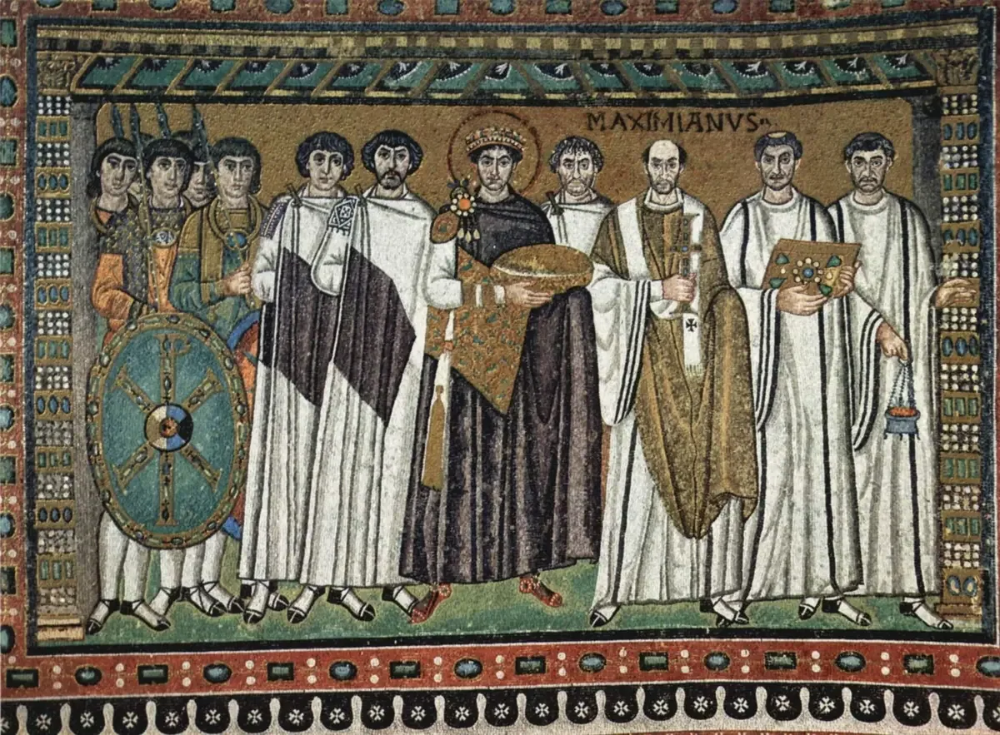
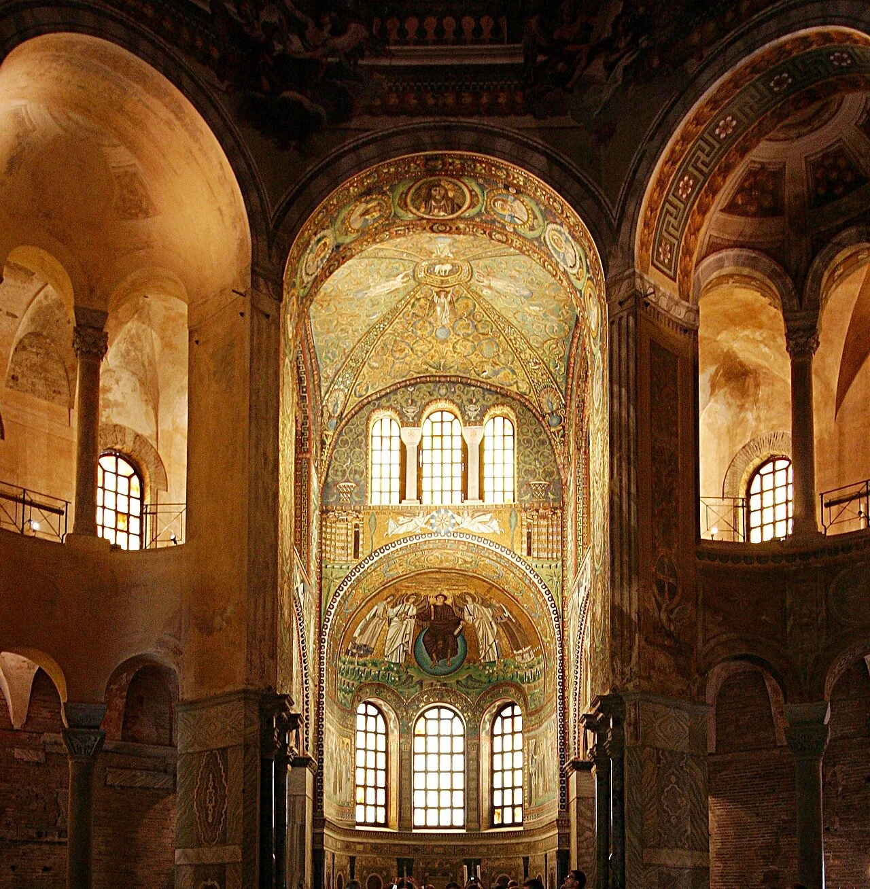
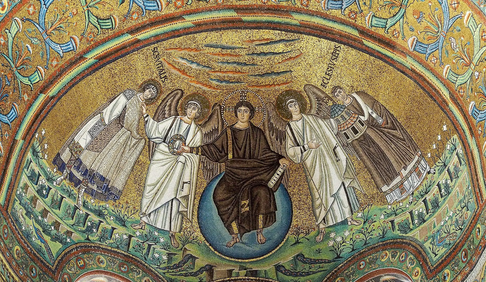
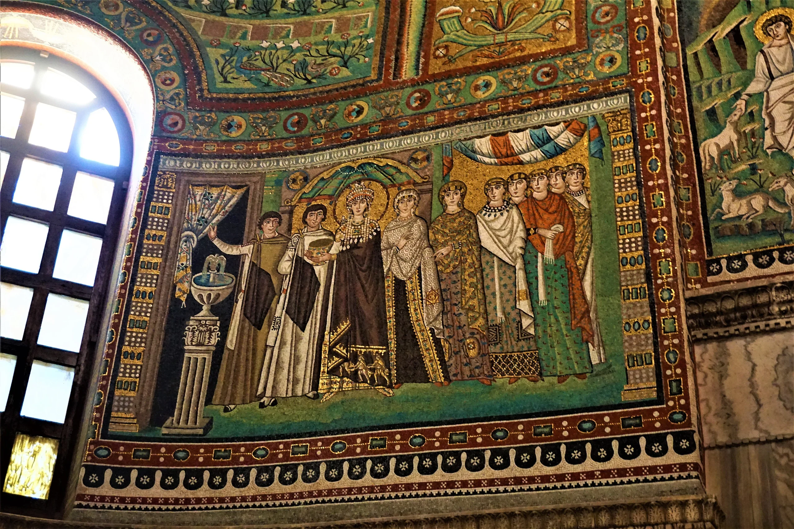
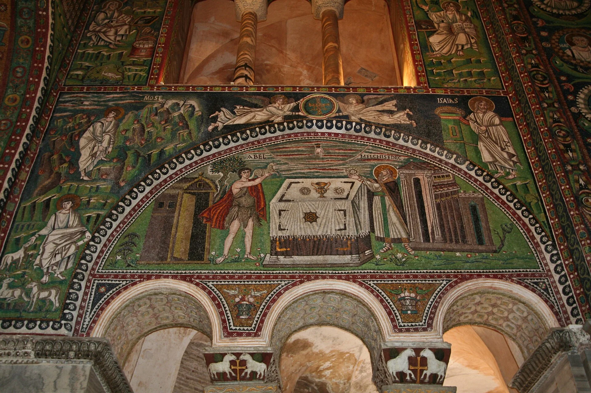

아직 펼치지 않은 카드빛과 돌로 지은 집 · 3산 비탈레의 유스티니아누스가운데 황제의 머리 뒤에는 왜 둥근 빛이 있을까요?가운데 아저씨 머리 뒤에 둥근 빛이 있어. 왜 있을까?
526~547년라벤나 · 이탈리아
산 비탈레의 유스티니아누스
547년, 이탈리아 라벤나의 산 비탈레 성당이 봉헌되었어요. 제단 양쪽 벽에는 황제와 황후가 저마다 예물을 들고 제단 쪽으로 걸어오는 모습이 작은 돌과 유리 조각으로 박혀 있어요. 황후 테오도라 쪽 모자이크에서 작은 것들을 하나씩 찾아 가까이 보세요.
작은 돌 조각으로 그린 황후가 금빛 잔을 들고 있어. 황후 옷자락에 숨은 그림도 있대. 하나씩 찾아볼까?
검수 전 시안이에요(기준서 1판). 장면에는 기록에 있는 것만 옮겼고, 기록마다 다른 것은 따로 적었어요. 상상은 ‘눈 감고 상상해 보기’에만 썼어요.
시안 확인용카드 단계 미리 보기
1
여덟 모 성당
라벤나의 주교 에클레시우스는 콘스탄티노폴리스에 다녀온 뒤 이 성당을 짓기 시작했어요. 은행가 줄리아노 아르젠타리오가 돈을 댔어요(라벤나 교구 공식 누리집).
성당은 여덟 모 꼴이에요. 여덟 모 꼴 바깥벽 안에, 더 높이 솟은 작은 여덟 모 꼴이 또 하나 들어 있어요(스마트히스토리).

547년, 주교 막시미아누스가 성당을 봉헌했어요. 공식 누리집은 그를 성당 안 장식을 맡긴 사람으로 소개해요.
사진은 성당 한가운데서 바라본 제단 쪽이에요. 이 아치 안쪽 양쪽 벽에 황제와 황후의 모자이크가 마주 보고 있어요.
여덟 모 꼴 성당이야. 안쪽 벽과 천장이 다 작은 돌 그림이야!
물어보기여덟 모 꼴, 손가락으로 여덟 번 꺾어 그려 볼까?
2
성당 모형을 든 주교
제단 뒤 반원 지붕에는 젊은 그리스도가 파란 공 위에 앉아 있어요. 공은 온 세상을 뜻해요(스마트히스토리). 양옆에는 천사 미카엘과 가브리엘이 서 있어요(공식 누리집).
그리스도는 왼쪽의 성인 비탈리스에게 순교자의 관을 건네요. 오른쪽에서는 이 성당을 지은 주교 에클레시우스가 작은 성당 모형을 바쳐요(공식 누리집·스마트히스토리).

성당이 자기 모형을 안고 있는 셈이에요. 지은 사람은 그림 속에서도 이 집을 두 손에 들고 서 있어요.
그리스도의 발아래에는 낙원의 네 강이 흘러요(스마트히스토리).
오른쪽 아저씨가 손에 작은 성당을 들고 있어! 이 성당을 지은 주교님이래.
물어보기너라면 누구에게 무엇을 들고 갈 거야?
3
황후의 행렬
제단 곁에 서서 오른쪽 벽을 올려다봐요. 황후 테오도라가 시녀들과 신하들을 거느리고 서 있어요. 맞은편 벽에는 유스티니아누스 황제가 있어요.
황제는 성찬의 빵을 담는 그릇을, 황후는 포도주를 담는 잔을 들었어요(스마트히스토리). 공식 누리집은 두 행렬을 ‘황제와 황후의 봉헌(oblatio Augusti et Augustae)’이라고 불러요.
황후 테오도라 쪽 모자이크예요. 그림 속 작은 것들을 하나씩 눌러 보세요.

황후 테오도라와 수행원들의 모자이크(547년 무렵), 2018년 사진 · 사진: Joyofmuseums · CC BY-SA 4.0 · 위키미디어 공용
그림 위의 숫자나 아래 번호를 눌러 보세요.
여섯 곳을 다 찾았어요. 작은 돌과 유리 조각 수만 개가 모여 한 사람 한 사람의 얼굴과 옷이 되었어요.
그런데 두 사람은 라벤나에 온 적이 없어요(공식 누리집·스마트히스토리). 실제로는 오지 않았지만, 모자이크 속에서는 1,500년 가까이 이 제단 곁에 서 있어요.
그림 속 작은 것들을 하나씩 눌러 보세요. ‘가까이 보기’를 누르면 작은 돌 조각까지 보여요.
황후가 금빛 잔을 들고 있어. 옷자락에도 숨은 그림이 있대!
물어보기황후 옷자락 아래쪽에 무엇이 그려져 있어?
4
제단 둘레의 제물
제단 가까운 반원 벽에는 아벨과 멜기세덱이 나와요. 아벨은 어린양을, 멜기세덱은 빵을 들고 가운데 제단으로 와요. 하늘에서 내려온 손이 그 제물을 받아요(스마트히스토리 · 창세기 4장, 14장).
맞은편 반원 벽에는 아브라함이 세 손님을 대접하는 이야기와, 아들 이사악을 바치려던 이야기가 있어요(공식 누리집 · 창세기 18장, 22장).

제단 둘레가 온통 무언가를 들고 와 바치는 사람들이에요. 그 한가운데 제단이 있고, 양쪽 벽의 황제와 황후도 예물을 들고 그쪽으로 걸어와요.
사진 맨 아래 기둥머리마다 십자가를 사이에 둔 어린양 두 마리도 있어요.
왼쪽 사람은 어린양을, 오른쪽 사람은 빵을 들고 와. 가운데 제단 위에 잔도 있어!
물어보기하늘에서 내려온 손을 찾았어?
눈 감고 상상해 보기
제단 곁, 서늘한 돌바닥에 서 있어요. 창으로 든 빛이 벽을 스치면 작은 유리 조각들이 하나씩 반짝여요. 고개를 들면 황후의 진주 관이 반짝이고, 맞은편에서 황제가 금빛 그릇을 들고 다가와요.
눈을 감아 봐. 벽에 작은 유리 조각이 반짝반짝. 황후가 금빛 잔을 들고 다가와!
나의 자리
나는 무엇을 두 손에 들고, 어디를 향해 서 있나요?
작은 돌 조각으로 내 얼굴을 만든다면 무슨 색을 쓸까?
마음에 닿는 한 줄을 고르거나 직접 써 보세요. 한 줄을 남기면 이 자리의 도장이 찍혀요. 이 기기에만 저장돼요.
더 깊이
궁금한 칸만 펼쳐 읽어도 괜찮아요.
알고 보면
마주 보는 두 벽. 황제는 빵 그릇을, 황후는 잔을 들고 서로 마주 봐요. 성찬에 쓰는 빵과 포도주가 두 벽에 나뉘어 있어요(스마트히스토리·하버드).
예물을 든 동방 박사. 캘리포니아 대학의 한 미술 해설은 황후 옷자락의 동방 박사를, 하느님께 예물을 드린 앞선 사람들을 떠올리게 하는 장치로 읽어요(앨런의 미술 세계).
주교 이름. 황제 쪽 벽에는 주교 머리 위에 ‘막시미아누스’라는 이름이 있어요. 스마트히스토리는 이 이름을 나중에 넣은 것이라고 설명해요. 황후 쪽 벽에는 이름이 적힌 사람이 없어요.
기록마다 다른 점
그리스도가 든 것. 라벤나 교구 공식 누리집은 ‘율법 두루마리’라고 적고, 스마트히스토리는 일곱 봉인이 보이는 요한계시록의 책이라고 설명해요(요한계시록 5장).
짓기 시작한 때. 공식 누리집은 에클레시우스가 콘스탄티노폴리스에 다녀온 525년에 지었다고 적고, 스마트히스토리는 526년이나 527년에 시작했다고 적어요.
직접 가 보기
확인한 날 · 2026년 11월 18일 · 바뀌기 쉬운 정보라 정기적으로 다시 확인해요
라벤나 관광 안내 누리집에 따르면 산 비탈레는 여러 곳을 묶은 통합권으로 볼 수 있어요. 통합권은 7일 동안 곳마다 한 번씩 들어갈 수 있고, 네 곳·다섯 곳짜리에는 같은 주소의 갈라 플라치디아 영묘도 들어 있어요. 황제와 황후는 제단 쪽 아치 안쪽 양쪽 벽에서 마주 보고 있어요.
황후의 행렬 금박
황후 쪽 모자이크의 여섯 곳을 모두 찾아 읽으면 카드에 금박이 입혀져요.
황후 쪽 모자이크의 여섯 곳을 모두 찾아 읽기
아이와 함께 채색
아이와 함께 끝까지 보면 카드가 채색돼요.
아이와 함께 ‘영화처럼 보기’를 끝까지 보기
근거 보기 (7)
- 라벤나 교구 공식 누리집(ravennamosaici): 산 비탈레 — 에클레시우스가 콘스탄티노폴리스에 다녀온 뒤 525년, 줄리아노 아르젠타리오의 돈, 547년 막시미아누스 봉헌(안 장식을 맡김), 테오도라의 보석·자개 옷과 금잔, oblatio Augusti et Augustae, 두 사람은 라벤나에 오지 않음, 앱스의 그리스도·미카엘과 가브리엘·비탈리스의 관·에클레시우스의 모형·율법 두루마리, 아브라함·이사악·아벨·멜기세덱
- 스마트히스토리: 산 비탈레 — 526/527년 동고트 때 시작, 547년 봉헌, 여덟 모 안의 더 높은 여덟 모, 빵 그릇과 포도주 잔, 라벤나에 온 적 없음, 온 세상을 뜻하는 공 위의 그리스도·일곱 봉인 책·네 강, 에클레시우스가 성당을 바침, 아벨과 멜기세덱의 제물을 받는 손, 아브라함, 예식에 들어가려는 듯 걷힌 휘장, 주교 이름은 나중에 넣음
- 하버드 미술사 그림 자료(HAA): 「황후 테오도라와 수행원」 — 성찬의 잔, 왼쪽 두 남자, 시녀들, 옷단의 동방 박사 셋, 배경의 건물 장식·샘·천
- 라벤나 시(Ravenna città del mosaico): 황후 테오도라 — 진주·금·보석 관과 늘어진 장식, 휘장을 걷는 남자, 문은 산 비탈레 입구로 보는 학자도, 곁의 두 여인을 안토니나와 딸로 봄
- 앨런의 미술 세계(캘리포니아 대학 산타크루즈 강의 누리집): 테오도라의 행렬 — 황제는 오지 않았지만 모자이크로 1,500년, 옷단에 금실로 그린 동방 박사
- 라벤나 관광 안내 누리집(turismo.ra.it): 갈라 플라치디아 영묘 — 주소 Via San Vitale 17, 두 곳·네 곳·다섯 곳 통합권(7일, 곳마다 한 번), 네 곳·다섯 곳에 영묘 포함
- 영어 위키백과: Basilica of San Vitale — 길잡이로만
그림·사진·소리 출처
‘처음 만나는 기독교 문화’의 깊은 카드예요. 카드 단계와 남긴 글은 이 기기에만 저장돼요.